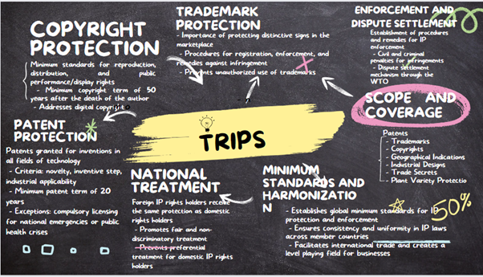

Overall, TRIPS plays a vital role in promoting and protecting intellectual property rights globally. By establishing minimum standards, harmonizing laws, and providing flexibility, it seeks to strike a balance between incentivizing innovation, promoting access to essential goods and services, and addressing the specific needs of different countries. TRIPS aims to create a robust and balanced intellectual property framework that fosters economic growth, technological advancement, and the dissemination of knowledge worldwide.
Traditionally, you would need to file separate applications in each country where you want protection. After that, you would have to follow various processes in each country to manage these rights, such as renewing them, allowing others to use them, or transferring them to someone else.
However, if you are from India or live in India, there is a more convenient and cost-effective way to secure and oversee your trademark rights in other countries. It is called the Madrid Protocol, and India became a part of it in 2013.
The Madrid Protocol simplifies and reduces the cost of protecting your brand internationally. It offers a one-stop solution for filing trademark applications and managing those registrations in foreign countries.
The Madrid Union, a group of countries and international organizations, has 100 members, covering 116 countries. Many of these countries are crucial trading partners with India, making it even more attractive.
You file a single application under the Madrid Protocol, indicating the countries where you want your trademark to be protected.
This application is reviewed, registered, and published by the World Intellectual Property Organization (WIPO).
WIPO then shares the details of your international registration with the countries you specified.
Each of these countries has a limited time to object. If they don’t object within 18 months, your trademark is automatically protected in their territory, as if you applied directly to that country.
Once your international registration is secured and your brand is protected in the designated countries, you can easily manage it online through WIPO. This includes renewing your trademark every ten years, expanding protection to new markets, and making various changes to your registration, like assigning rights to someone else or updating your details.
Filing your trademarks under the Madrid Protocol offers several key advantages:
The benefits extend beyond filing:
These advantages are particularly helpful for small and medium-sized companies (SMEs). The Madrid system’s cost-saving features are crucial for businesses with only a few international registrations.
Before applying, ensure your trademark is not excluded from protection by Indian law and isn’t already registered by someone else. Also, before protecting your mark abroad, check if it’s already registered in your target markets. You can use online tools like TMview, a global platform that allows you to search trademark databases, including India’s TM Registry, for free. TMview offers insights into trademark landscapes in many countries, making the process user-friendly. It provides access to information on millions of trademark applications and registrations worldwide, including those under the Madrid system. Please note that the accuracy of the data in TMview relies on the participating trademark offices.
1. Eligibility: Individuals or businesses located in India can file. A valid “basic mark” must exist in India, either registered or applied for protection at the India Trade Marks Registry.
2. Filing Process: Submit an international application electronically through the IP India website using the designated form (MM2(E)) found under “International application originating from India” at the comprehensive e-filing services gateway.
3. Required Information:
1) Name and address.
2)A representation of your trademark
3) Identical to the basic mark in India
4) List of goods and services to be protected
5) Matching those in the basic
6) Designation of Madrid Protocol member countries (Contracting Parties) where protection is desired.
4. Good Practices: Ensure accurate and clear indication of goods and services, following the Nice Classification. Madrid Goods & Services Manager (MGS), an online tool by WIPO, helps compile the list of goods and services and check if they align with the Madrid system's procedures and requirements.
5. Designation of Contracting Parties: Specify the Madrid Protocol member countries where you want protection. Currently, there are up to 100 Contracting Parties, including 116 States and two intergovernmental organizations (the European Union and the African Intellectual Property Organization).
6. Fees: Pay the required fees in Swiss francs to WIPO. Some Contracting Parties may have individual fees. WIPO offers an online Fee Calculator for easy fee calculation and accepts payment by credit card, WIPO current account, or bank transfer.
7. Review by India Trade Marks Registry: The India Trade Marks Registry will check if the applicant matches the basic mark holder, the international mark matches the basic mark, and the goods and services align. If all conditions are met, the international application is certified and transmitted to WIPO. If there are deficiencies, an online deficiency letter is issued.
8. WIPO Review: WIPO reviews the international application for classification accuracy and clear representation. If issues arise, WIPO sends an irregularity notice and grants a three-month period for corrections.
9. Registration and Publication: If the application aligns with requirements, WIPO registers the mark in the International Register, publishes it in the WIPO Gazette of International Marks, and notifies designated Contracting Parties. An international registration certificate is provided to the applicant.
Protection Period and Renewal: The mark enjoys protection in each designated Contracting Party for ten years, with the option for indefinite ten-year renewals. The holder can request modifications, changes in ownership, or license updates to the International Register through WIPO.
10. Dependency Period: For the first five years, the international registration’s fate depends on the basic mark in India. If the basic mark loses its effect during this period, the international registration is cancelled accordingly.
11. Transformation: To mitigate this dependency, the Madrid Protocol allows transformation into national or regional applications within three months of cancellation. These new applications maintain the original filing date.
12. Independence: After the five-year dependency period, the international registration becomes independent and is not affected by changes in the basic mark's status.
Madrid Monitor: This e-service by WIPO helps you track the status of international applications and registrations. It also provides detailed information on all marks registered via the Madrid system, including those of your competitors. It consolidates the functions of four previous WIPO tools.
ROMARIN (International Trademarks Database): This database allows you to search for detailed information on all international marks registered under the Madrid system. It is updated daily and includes currently active marks, those expired within the last six months, and those still under examination.
WIPO Gazette of International Marks: Published weekly, this official publication of the Madrid system contains the latest data about international registrations, renewals, subsequent designations, and modifications affecting existing registrations.
Madrid Electronic Alert (MEA): MEA is a free watch service that keeps you informed about the status of an international registration. It lets the holder create a list of IR numbers and sends email alerts whenever an update is recorded in the International Register.
Madrid Real-time Status (MRS): This tool provides real-time updates on the status of trademark documents being processed by WIPO.
Madrid Portfolio Manager (MPM): MPM is an online service designed for holders of international registrations to access and manage their trademark portfolios. This is especially helpful when submitting new requests for records in the International Register
TRIPS covers various forms of intellectual property rights, including patents, trademarks, copyrights, geographical indications, industrial designs, trade secrets, and plant variety protection. This broad coverage ensures that member countries have a comprehensive framework for protecting and enforcing different types of intellectual property.
TRIPS establishes minimum standards for the protection and enforcement of intellectual property rights. It requires member countries to adopt laws and regulations that meet these standards, ensuring a certain level of consistency and uniformity in IP protection globally. This harmonization aims to facilitate international trade and create a level playing field for businesses operating across borders.
The principle of national treatment under TRIPS ensures that foreign IP rights holders receive the same level of protection and treatment as domestic rights holders within member countries. This provision promotes fair and non-discriminatory treatment, preventing any form of preferential treatment for domestic IP rights holders.
TRIPS mandates that patents be granted for inventions in all fields of technology, subject to specific criteria such as novelty, inventive step, and industrial applicability. It establishes a minimum patent term of 20 years from the filing date, ensuring a reasonable period of exclusivity for inventors to recoup their investment and incentivizing innovation. However, TRIPS also recognizes that member countries can adopt certain exceptions and limitations to patent rights, such as allowing compulsory licensing in cases of national emergencies or public health crises.
TRIPS sets out minimum standards for copyright protection, including the rights of reproduction, distribution, and public performance or display of copyrighted works. It requires member countries to provide copyright protection for a minimum term of 50 years after the death of the author (or 50 years from publication for anonymous works). TRIPS also addresses digital copyright issues, including protection against unauthorized reproduction and distribution of digital content.
TRIPS emphasizes the importance of trademark protection for distinctive signs that identify goods and services in the marketplace. It requires member countries to establish effective trademark systems, including procedures for registration, enforcement, and the provision of remedies against trademark infringement. TRIPS promotes the prevention of unauthorized use of trademarks, which helps build consumer trust and fosters fair competition.
TRIPS recognizes the significance of effective enforcement mechanisms to combat intellectual property infringements. It requires member countries to establish procedures and remedies for the enforcement of IP rights, including civil and criminal penalties for infringements. TRIPS also provides a dispute settlement mechanism through the WTO, enabling member countries to resolve disputes related to intellectual property issues in a transparent and fair manner.
TRIPS acknowledges that member countries may need to adopt certain flexibilities and exceptions to strike a balance between IP protection and other public policy objectives. These flexibilities include compulsory licensing, which allows governments to authorize the use or production of a patented invention without the consent of the patent holder, under specific circumstances such as public health emergencies or to address anticompetitive practices. TRIPS also permits member countries to adopt measures to prevent the abuse of IP rights that may impede competition.
One of the critical areas addressed by TRIPS is public health. It recognizes the importance of access to affordable medicines, particularly in developing and least-developed countries. TRIPS allows member countries to use various measures to protect public health and promote access to medicines, including the use of compulsory licensing, the parallel importation of pharmaceutical products, and the ability to grant exemptions to patent rights for the production of essential medicines.
TRIPS encourages developed countries to provide technical and financial assistance to developing and least-developed countries to enhance their capacity in the field of intellectual property rights protection and enforcement. This assistance aims to bridge the technological and knowledge gap between nations, promoting technology transfer, and facilitating the development of domestic innovation and creativity.
Overall, TRIPS plays a vital role in promoting and protecting intellectual property rights globally. By establishing minimum standards, harmonizing laws, and providing flexibility, it seeks to strike a balance between incentivizing innovation, promoting access to essential goods and services, and addressing the specific needs of different countries. TRIPS aims to create a robust and balanced intellectual property framework that fosters economic growth, technological advancement, and the dissemination of knowledge worldwide.
Berne Convention for the Protection of Literary and Artistic Works, often referred to as the Berne Convention, is an international agreement that establishes the minimum standards for copyright protection among its member countries.
The Berne Convention was first adopted in 1886 in Berne, Switzerland, and has undergone several revisions since then. It aims to provide creators of literary, artistic, and intellectual works with a standardized framework for copyright protection and to facilitate international recognition and enforcement of their rights.
The Convention covers various types of creative works, including but not limited to:
The Berne Convention for the Protection of Literary and Artistic Works, adopted in 1886, stands as a milestone in international copyright law. With its primary objective of providing a standardized framework for copyright protection, the Berne Convention has fostered global cooperation and ensured the rights of creators are recognized and respected. This article delves into the key provisions and significance of the Convention, shedding light on its impact on the protection and promotion of creativity worldwide.
At the core of the Berne Convention lies the principle of national treatment, ensuring that creators from member countries are accorded the same copyright protection as their own citizens receive. By eliminating discriminatory practices based on nationality, the Convention promotes fairness and equal opportunities for creators worldwide.
The Convention also establishes minimum standards for copyright protection, acting as a foundation for member countries’ copyright laws. While countries have the flexibility to adopt more extensive protection, the Berne Convention sets the baseline, ensuring that creators are granted essential rights and safeguards regardless of their origin.
The Berne Convention provides creators with the advantage of automatic protection, rendering copyright protection inherent as soon as a work is created. This eliminates the need for formalities such as registration or copyright notices, streamlining the process and reducing administrative burdens for authors.
The elimination of copyright formalities also simplifies international copyright protection. Creators no longer face disparate registration or deposit requirements when seeking protection in different member countries. This harmonization facilitates the global recognition and enforcement of copyright, promoting cross-border collaborations and the dissemination of creative works.
The Berne Convention sets a minimum duration for copyright protection, ensuring that creators and their heirs benefit economically from their works. The minimum term stipulates that copyright lasts for the lifetime of the author plus an additional period of 50 years after their death.
However, countries have the freedom to extend copyright terms beyond the Convention’s minimum requirements. Many jurisdictions, including the European Union, have extended the duration to 70 years after the author’s death for most works. These extensions provide longer protection and incentivize creativity, allowing authors and their families to enjoy economic benefits for an extended period.
The Berne Convention grants creators exclusive rights over their works, enabling them to control and monetize their creations. These rights encompass reproduction, distribution, public performance, adaptation, and translation, empowering authors to exercise control over the exploitation of their intellectual endeavours.
To strike a balance between the rights of creators and public interests, the Convention acknowledges the necessity for limitations and exceptions to copyright. Member countries can implement reasonable limitations and exceptions, such as fair use/fair dealing, educational use, or public interest considerations. These provisions foster innovation, education, and access to knowledge while upholding the core principles of copyright protection.
In addition to economic rights, the Berne Convention recognizes moral rights, which safeguard the non-economic interests and reputation of authors. Moral rights encompass two fundamental aspects: the right to be identified as the author of a work and the right to object to any modifications or distortions that may harm the author’s reputation.
Moral rights are typically perpetual and non-transferable, enabling authors to maintain control over the integrity and authenticity of their works. By preserving the link between creators and their creations, moral rights ensure that authors’ artistic vision and reputation are safeguarded, even if economic rights are transferred or expired.
To ensure the effective enforcement of copyright, the Berne Convention obligates member countries to establish mechanisms for combating copyright infringements. These mechanisms encompass civil remedies, such as injunctions and damages, as well as criminal penalties for severe infringements.
Furthermore, the Convention promotes international cooperation and information exchange among member countries. The principle of reciprocity requires countries to provide each other with the same level of protection and enforcement they grant to their own citizens. Organizations like the World Intellectual Property Organization (WIPO) facilitate this cooperation, assisting countries in implementing and enforcing copyright laws and addressing the challenges posed by the digital age.
The Berne Convention stands as a crucial international agreement that has shaped the landscape of copyright protection and fostered global collaboration in the creative industries. By establishing national treatment, minimum standards, and automatic protection, the Convention ensures that creators' rights are upheld and that their works are recognized and respected internationally. With its emphasis on exclusivity, moral rights, and enforcement, the Berne Convention continues to play a vital role in nurturing creativity, encouraging innovation, and safeguarding the interests of authors in an increasingly interconnected world.